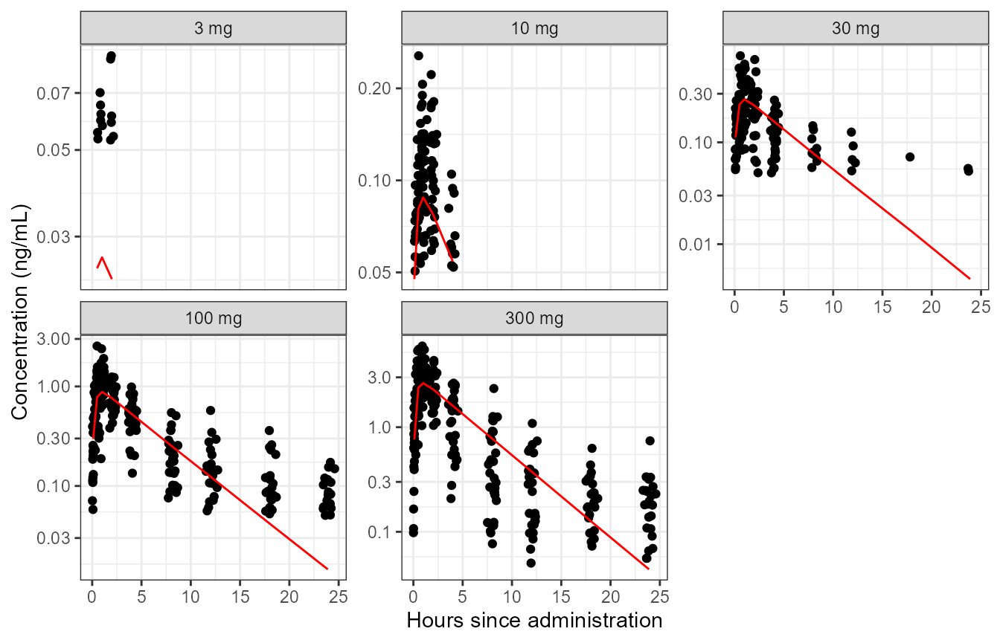
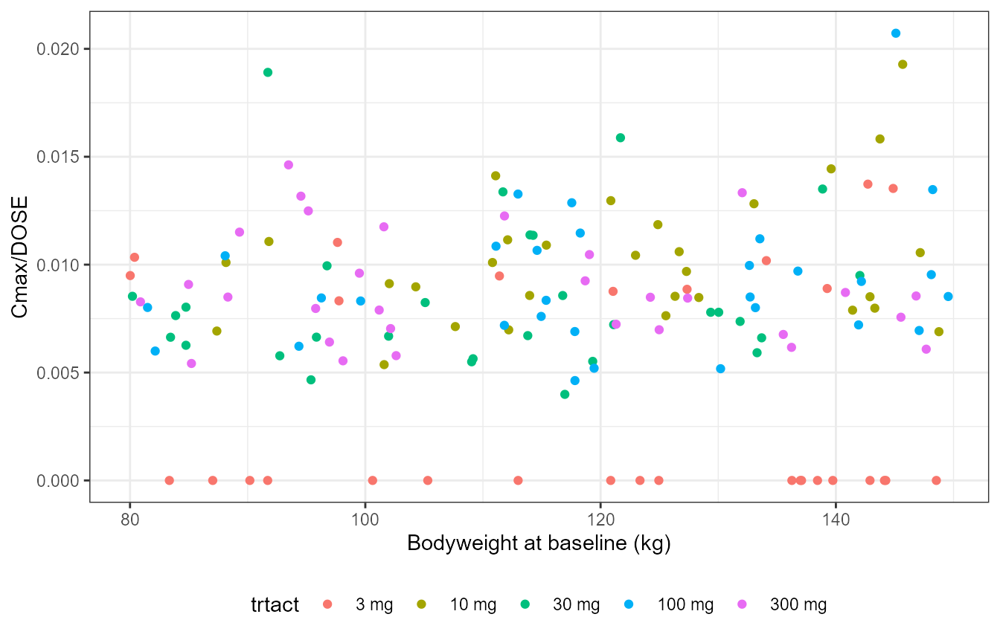
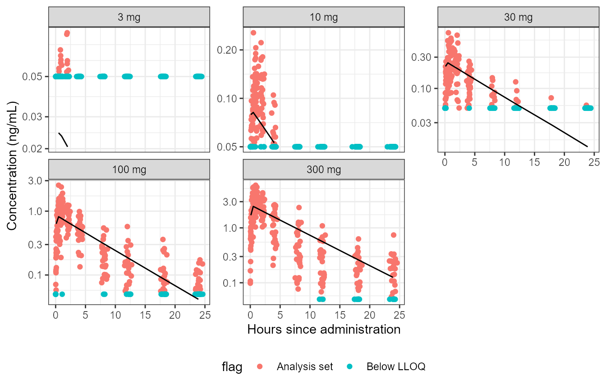

Automated and general reader of Nonmem data
NMscanData.RmdBuilt 2020-09-17 using NMdata 0.0.5.1.
Introduction
Getting data from R to Nonmem and back can be tedious and time consuming. The way data is exported from Nonmem means that a few tables may have to be combined, and then some variables may still be missing (like character variables which may be in the input data file). Most modellers develop some habits over time to avoid some issues. But still, it may be time demanding even for experienced modelers to pick up a model developed by someone else or by themselves earlier in their career just because they need to understand what data exported and how. This vignette focuses on how NMdata provides a very general solution for what needs to be trivial: get a dataset out of a Nonmem run. And “general” means that it will work out of the box in as many cases as possible. It will do its best to understand how the data can be read and combined, (ideally) regardless of the way the model was written.
In brevity, the most important steps are
- Read and combine output tables
- If wanted, read input data and restore variables that were not output from the nonmem model
- If wanted, also restore rows from input data that were disregarded in Nonmem (e.g. observations or subjects that are not part of the analysis).
It should not be to hard to do. But with the large degree of flexibility Nonmem offer, there are a lot of caveats to be aware of, again especially if the model wasn’t written by your own (current) standards.
Get started
Try NMscanData on any model:
res0 <- NMscanData(NMdata_filepath("examples/nonmem/xgxr001.lst")) #> Number of output tables read: 1. #> Read delimited text input data file. #> Input data columns will be appended to output data. However, column(s) were #> identified as unique identifiers, present in both input and output data. If this #> column or one of these columns is not modified by the Nonmem run, consider using #> this in col.row for a robust merge of input and output data. Candidate columns: ROW #> To skip this check, please specify either col.row (recommended) or cbind.by.filters. class(res0) #> [1] "NMdata" "data.table" "data.frame"
NMscanData has read and combined input and output data and returned a data.table. The NMdata class allows for keeping additional information in the object, but it can be treated as a data.table. If you are not used to data.table and don’t want to use them, feel free to convert to another class, or use the as.dt=FALSE argument and get a data.frame back. NMdata uses data.table under the hood but all functions will work even if you don’t. In the future, NMdata may be able to return tibbles or other classes as well.
NMscanData writes a little information about what has been read. We are being recommended merging by a unique row identifier. The default of interpreting Nonmem code is not recommended. It is the default because it does not rely on assumptions about the input data. It happens that this dataset and one of the output tables contain a row identifier (a row counter in the column called ROW). Let’s follow the recommendation and use this column for merging. The following checks that we get the same result from the two methods.
res1 <- NMscanData(NMdata_filepath("examples/nonmem/xgxr001.lst"), col.row = "ROW") #> Number of output tables read: 1. #> Read delimited text input data file. all.equal(res0, res1) #> [1] TRUE
All features shown below will work whether you supply col.row or not. We use col.row because it is more robust and always recommended.
Let’s have a quick look at the data we got back. The following is again done with data.table but the comments in the code should make it clear what happens.
The data used for the example is a PK single ascending dose data set borrowed from the xgxr package, kindly allowed by the xgxr team.
## trtact is a character. Make it a factor with levels ordered ## by numericaldose level. res1[, `:=`(trtact, reorder(trtact, DOSE))] ## Derive another data.table with geometric mean pop ## predictions by treatment and nominal sample time. Only use ## sample records. res1.mean <- res1[EVID == 0, .(gmPRED = exp(mean(log(PRED)))), by = .(trtact, NOMTIME)] ## plot individual observations and geometric mean pop ## predictions. Split by treatment. ggplot(res1[EVID == 0]) + geom_point(aes(TIME, DV)) + geom_line(aes(NOMTIME, gmPRED), data = res1.mean, colour = "red") + scale_y_log10() + facet_wrap(~trtact, scales = "free_y") + labs(x = "Hours since administration", y = "Concentration (ng/mL)")

You see from the plot that the obtained dataset contains both model predictions (i.e. from output tables) and a character variable, trtact (i.e. from input data). NMscanData has read both and combined them.
Subject-level variables
In a proper PK/PD analysis we need to explore the data at multiple variability levels. What we looked at above is at dosing and sampling level (one row per dosing or sampling event). NMdata provides very useful functions to extract information at other levels of variability. Before extracting the subject-level information we will add an individual exposure measure to the dataset. We will use the emperical Bayes’ estimate of the individual maximum concentration. This is derived as the maximum prediction across the sample times - it may be better to simulate the model at a richer time scale to get better precision.
res1[, `:=`(Cmax, max(IPRED)), by = .(ID)] res1.id <- findCovs(res1, cols.id = "ID") dim(res1.id) #> [1] 150 27 ggplot(res1.id, aes(WEIGHTB, Cmax/DOSE, colour = trtact)) + geom_point() + labs(x = "Bodyweight at baseline (kg)")

If your model includes occasion variability, you probably also want to look at
## we have no occasion variability in this data res1.id.occ <- ## findCovs(res1,cols.id=c('ID','OCC'))
Let’s use the same function to see the variables that are constant across the whole dataset
findCovs(res1) #> TVKA TVV2 TVCL TVV3 TVQ V3 Q nmout BLQ CYCLE FLAG #> 1: 0.18116 0.042 0.72491 0.17857 8813700 0.17857 8813700 TRUE 0 1 0 #> PART PROFDAY STUDY TIMEUNIT flag model #> 1: 1 1 1 Hours Analysis set xgxr001
Let’s take a look at what is in the res1.id generated above. It is a mix of variables that vary at subject level and varibles that are constant across the full dataset.
dim(res1.id) #> [1] 150 27 head(res1.id, 2) #> ID TVKA TVV2 TVCL TVV3 TVQ KA V2 CL V3 #> 1: 31 0.18116 0.042 0.72491 0.17857 8813700 0.18116 0.042 0.72491 0.17857 #> 2: 32 0.18116 0.042 0.72491 0.17857 8813700 0.18116 0.042 0.72491 0.17857 #> Q nmout BLQ CYCLE DOSE FLAG PART PROFDAY STUDY WEIGHTB eff0 TIMEUNIT #> 1: 8813700 TRUE 0 1 3 0 1 1 1 87.031 56.461 Hours #> 2: 8813700 TRUE 0 1 3 0 1 1 1 100.620 45.096 Hours #> TRTACT flag trtact model Cmax #> 1: 3 mg Analysis set 3 mg xgxr001 0 #> 2: 3 mg Analysis set 3 mg xgxr001 0
findCovs has a counterpart in findVars which finds variables that do vary within constant values of optional columns. To get only the ones that vary within the dataset (i.e. they are truely subject-level variables), we can do
res1.id2 <- findVars(res1.id) dim(res1.id2) #> [1] 150 10 head(res1.id2, 2) #> ID KA V2 CL DOSE WEIGHTB eff0 TRTACT trtact Cmax #> 1: 31 0.18116 0.042 0.72491 3 87.031 56.461 3 mg 3 mg 0 #> 2: 32 0.18116 0.042 0.72491 3 100.620 45.096 3 mg 3 mg 0
findVars supports the cols.id argument too. So you can use findVars(res1,cols.id="ID") for find variables that are non-constant within (at least one value of) ID. cols.id can be of arbitrary length.
Of course, we most often know what covariates or other subject-level variables to look at, and we would not search for them after running a nonmem model. But in the situation where you are looking at someone else’s work or you are doing a meta analysis across models where the data has been coded slightly differently, these simple tools can be very useful. Also, remember that if a variable is returned by these functions, you know that they fullfill the variability requirement. We know that variables in res1.id above non-varying within ID, meaning that no ID has more than one value of the variable. NA counts as any other value, so if a value is returned for subject in res1.id, this subject does not have NA’s in res1.
More options and features
Recover rows
You may have wondered why there is so little data on the small doses in the plot of observations and geometric mean population predictions above. The reason is that observations below the lower limit of quantification have been disregarded. For this and many other reasons, it is very common to use ACCEPT and IGNORE statements in the $INPUT section of nonmem control streams. NMscanData can include this data in the returned data object as well. Let’s redo the plot above taking advantage of this option:
res2 <- NMscanData(NMdata_filepath("examples/nonmem/xgxr014.lst"), col.row = "ROW", recover.rows = TRUE) #> Number of output tables read: 1. #> Read rds input data file. ## Derive another data.table with geometric mean pop ## predictions by treatment and nominal sample time. Only use ## sample records. res2.mean <- res2[EVID == 0 & nmout == TRUE, .(gmPRED = exp(mean(log(PRED)))), by = .(trtact, NOMTIME)] ## plot individual observations and geometric mean pop ## predictions. Split by treatment. ggplot(res2[EVID == 0]) + geom_point(aes(TIME, DV, colour = flag)) + geom_line(aes(NOMTIME, gmPRED), data = res2.mean) + scale_y_log10() + facet_wrap(~trtact, scales = "free_y") + labs(x = "Hours since administration", y = "Concentration (ng/mL)")

A couple of details are different compared to when we read res1. For now, notice one thing changed when calculating the population geometric means by nominal time and dose. We included nmout==TRUE. nmout is a boolean column created by NMscanData expressing whether the rows were in the output data (nmout==TRUE) or they were recovered from the input data. PRED is obviously not calculated for data rows neglected by Nonmem, so we want to keep those out of the calculation. Let’s see how many were recovered
## this is just a long-format representation of ## with(res1,table(nmout,flag)) using data.table. res1[, .N, by = .(nmout, flag)] #> nmout flag N #> 1: TRUE Analysis set 905
So 905 were part of the analysis.
The recover.rows argument can be used independently of whether col.row is used.
Combine multiple models
You may have noticed a column called model in some of the output above. NMscanData by default adds this column for convenience when working with multiple models. You can specify both column name and content as arguments in NMscanData. If you don’t, the column will be called model, and the model name taken from the lst file name (say, xgxr001). In the following we use this to compare population predictions from two different models. We read them again just to show the use of the argument to name the models ourselves.
## notice fill is an option to rbind with data.table res1.m <- NMscanData(NMdata_filepath("examples/nonmem/xgxr001.lst"), col.row = "ROW") #> Number of output tables read: 1. #> Read delimited text input data file. res2.m <- NMscanData(NMdata_filepath("examples/nonmem/xgxr014.lst"), col.row = "ROW", name = "single-compartment") #> Number of output tables read: 1. #> Read rds input data file. res.mult <- rbind(res1.m, res2.m, fill = T) res.mult.mean <- res.mult[EVID == 0 & nmout == TRUE, .(gmPRED = exp(mean(log(PRED)))), by = .(model, trtact, NOMTIME)] ggplot(res.mult.mean, aes(NOMTIME, gmPRED, colour = model)) + geom_line() + scale_y_log10() + facet_wrap(~trtact, scales = "free_y")

Use a row identifier or interpret Nonmem code
A unique row identifier is not needed for NMscanData to run and in most cases succesfully and correctly complete all the steps above. However, the most robust way to use NMscanData is to include a unique row identifier in both input and at least one full-length output table. Then tell NMscanData to use the row identifier using the col.row argument. The advantage is that less nonmem code has to be interpreted for this method. However, notice that no checks are being done if the row identifier has been modified during the nonmem run. If you tell NMscanData that the column called ROW is a to be used as the row identifier, and ROW is being modified in say $PK before being output in an output table, this will mess up the result. But if you keep the good practice of including a unique row identifier in your dataset, the advice is to include it in at least one output table and tell NMscanData to use it by the argument col.row.
Preserve all input data properties
In the code above when plotting the population predictions together with individual observations, we saw that character variables (the treatment as dose with unit) was read from the input data file and was used for splitting the plots. However, in order to sort the plots naturally by increasing dose level, we had to run reorder on the variable. This is because the input data is read from a csv file. NMscanData will not code any character variables as factors when reading from text files.
Since the character representation of treatment was already prepared, it would be natural to encode the factor levels already at that point. In order to preserve such information, we can use R’s native rds format. If the argument use.rds is TRUE, NMscanData will look for an rds file next to the input data file (which is a delimited text file) the exact same name as the text file except the extension must be “.rds” rather than say “.csv” (for nonmem and NMscanData, the extension of the delimited text file doesn’t matter). If it finds the rds file, this will be used instead. No checks are done of whether the contents are similar in any way to the delimited text file which is ignored in this case.
Return to the example above creating the dataset dat2. Notice the message from NMscanData that an rds file was found. This is why we could sort the plots correctly on the dose level with reordering the factor levels first. There are three advantages of using rds files
- All attributes are kept. This includes column classes and factor levels.
- Reading speed may be improved (NMdata uses
freadfromdata.tablewhich is extremely fast for delimited files so in many cases this difference can be small). - File sizes are greatly reduced from text to rds. This can be a big advantage if you are transfering files or reading over a network connection. NMdata is generally very fast (thanks to
data.table) so file access (I/O) is likely to be the main bottleneck.
If you write Nonmem datasets with the NMdata::NMwriteData, you can get an rds file automatically, exactly where NMscanData will look for it. Creating datasets are out of the scope of this vignette, though.
Custom naming of input and output control streams
By default, NMscanData expects a psn-style naming of input and output control streams. This means that if the input control stream is called model.mod, the returned control stream is called model.lst. If you use a different setup, you can use the file.mod argument. Do one of the following if needed:
- Explicitly give the path to the input control stream or
- Pass a function that translates from the output control stream to the input. Example if the input is called
input.txtand the output is calledoutput.txt:
out2in <- function(file) file.path(dirname(file), "input.txt") res <- NMscanData("path/to/output.txt", file.mod = out2in)
What exactly will NMscanData return?
So far, the merge has been very straightforward, but in many situations, choices have to be made.
The following main principles are followed
- Output data prevails over input data
- Row-specific output data is preferred over ID-level (FIRSTONLY or LASTONLY) tables
- Output tables are prioritized by their order of apperance
- Input data is as defined in the $INPUT section in Nonmem. This includes renaming of columns, and columns that are dropped in Nonmem (DROP or SKIP) are disregarded. Columns that are not read by Nonmem are named as in the input data file.
- If rows are being recovered from input data (the
recover.rowsargument), no information from output is merged onto these rows - The primary aim is to return the output data. If input and output cannot be meaningfully combined (very rare), output will be returned.
The building blocks
The lst file was scanned for output tables, and they were all read (including interpreting the possible firstonly option). The input data has been used based on the DATA and INPUT sections of the control stream. The key steps in this process are available as independent functions.
NMreadTab: Read an Nonmem output table based on the path to the output table file.
NMscanTables: Read all output data files defined in a Nonmem run. Return a list of tables (as data.frames or data.tables).
NMtransInput: Read input data based on a nonmem file. Data will be processed and named like the Nonmem model. ACCEPT and IGNORE filters can be applied as well. There are a few limitations to this functionality at this point.
What should I do for my models to be compatible with NMscanData?
The answer to this should be as close to “nothing” as possible - that’s more or less the aim of the function. You just have to make sure that the information that you need is present in input data and output data. No need to output information that is unchanged from input, but make sure to output what you need (like IPRED, CWRES, CL, ETA1 etc which cannot be found in input). Some of these values can be found from other files generated by Nonmem but notice: NMscanData uses only input and output data.
It is recommended to always use a unique row identifier in both input and output data. This is the most robust way to merge back with input data. In firstonly tables, include the subject ID. Again, everything will most likely work even if you don’t, I personally don’t like relying on “most likely” when I can just as well have robustness.
Limitations
Input file must exist and be unmodified since model run
If merging with input data, the input data must be available as was when the model was run. If you want to avoid this potential issue, Nonmem can be run in a wrapper script that either copies the input data, or runs NMscanData and saves the output in a compressed file format (like rds or zip).
Not all data filter statements implemented
Nested ACCEPT and IGNORE statements are not supported at this point. The resulting number of rows after applying filters is checked against row-level output table dimensions (if any available). In other words, you have to be unlucky to run into trouble without an error. But it is alway recommended to use a unique row identifier in both input and output tables in order to avoid relying on interpretation of Nonmem code.
Character time variables not interpreted
Nonmem supports a clocktime input format for TIME. Based on a day counter and a character (“00:00”) clock format, Nonmem can calculate the individual time since first record. This behaviour is not mimicked by NMscanData, and the only ways to get TIME in this case are to either include it in an output TABLE or to code the translation yourself after calling NMscanData. Of course, this is on the todo list.
FIRSTLASTONLY not supported
The FIRSTLASTONLY option in $TABLE results in two rows per subject. For now, this cannot be merged with input, and these tables are disregarded with a warning (you can read them with NMscanTables). LASTONLY is treated like FIRSTONLY, i.e. as ID-level information if not available elsewhere.